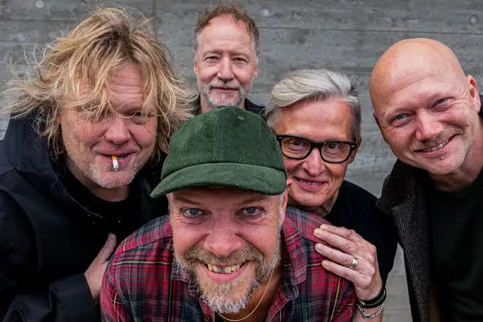

Mød bandet
Magtens Korridorer er et dansk rockband kendt for deres energiske blanding af rock, punk og skæve, skarpe
tekster om hverdagen, danskerne og de små tragikomiske øjeblikke i livet. Bandet brød for alvor igennem i
2005 da de vandt Karrierekanonen med sangen Lorteparforhold. De udgiver samme år albummet Friværdi.
I 2006 åbner bandet orange scene på Roskilde Festival.
Sangen “Lørdag formiddag” bliver brugt som titelsang i Bonderøven som bliver sendt for første gang i 2008,
og er stadig den dag i dag titelsang i programmet.

Anders Ramhede
Trommer

Johan Olsen
Vokal

Niklas Schneidermann
Guitar

Rasmus Kern
Guitar, keys

Terkel Møhl
Bas